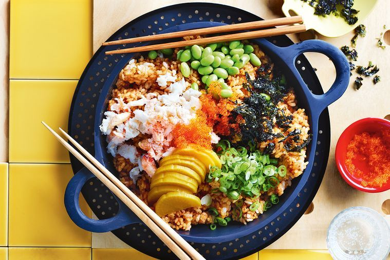

Spanner crab rice with edamame and tobiko

Description
This spanner crab and crispy rice dish couldn't get much easier, and the
delicately balanced flavors will leave everyone impressed.
Ingredients
- 240g cooked spanner crab, meat picked
- 400g frozen whole edamame, thawed, steamed, podded
- 80g pickled daikon, drained, sliced
- Seasoned nori flakes & sliced long green shallots, to serve
- Tobiko orange, to serve
Crispy Rice
- 3 cups (625g) Japanese short grain rice, soaked in cold water for 1 hour
- 1 tbs sesame oil, plus extra to drizzle
- 130g store-bought XO sauce
- 1/4 cup (60ml) lemon juice
- 1/3 cup (80ml) light soy sauce
Steps
- For the crispy rice, drain soaked rice and cook to packet instructions.
Heat 1 tbs sesame oil in a large non-stick, heavy- based, high-sided
frypan over medium- high heat. Add rice and spread into an even layer.
Cook without stirring for 6-8 minutes until rice is crispy and golden
on the bottom. Combine XO sauce, lemon juice and soy sauce in a bowl
and drizzle over the rice. Mix to combine, using a large metal spoon
to fold crispy rice into the soft rice.
- Scatter over crab, edamame, takuan, nori, sliced long green shallot
and drizzle with extra sesame oil. Place a spoonful of tobiko orange
in the centre. Serve in pan.